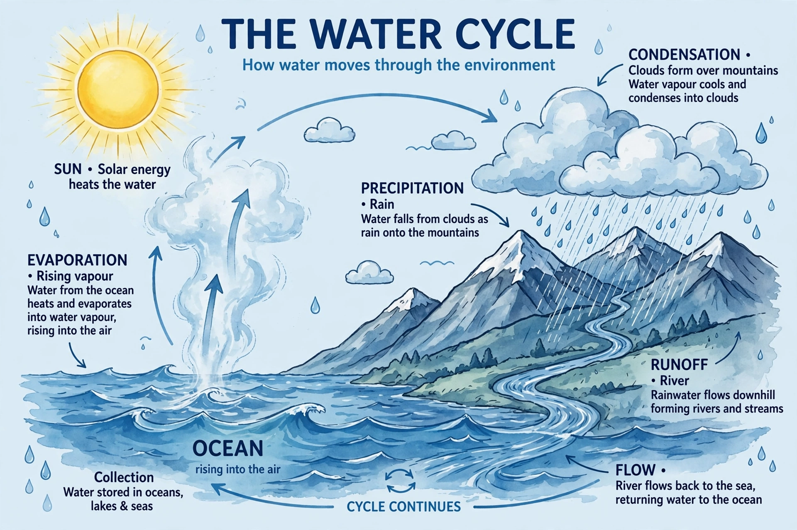
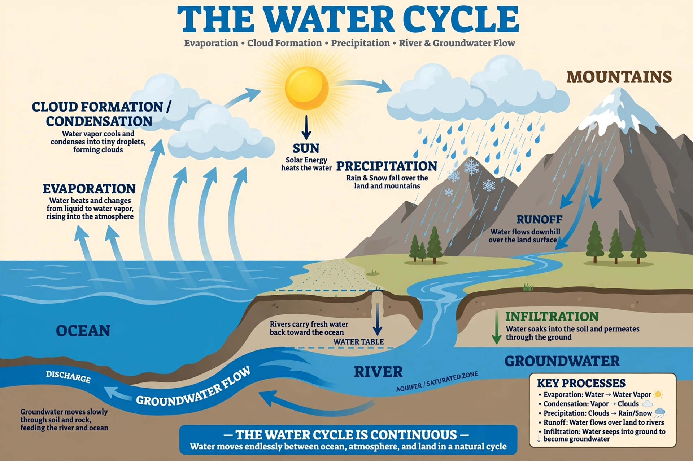

Water cycle


The water cycle, also called the hydrological cycle, is the continuous movement of water through the oceans, atmosphere and land. Solar energy drives evaporation from the sea and land and transpiration from plants; water vapour condenses into clouds, falls as precipitation, and returns to the sea through rivers, groundwater and ice.
The cycle involves no net creation or loss of water, but it constantly redistributes it among reservoirs where it resides for times ranging from days in the atmosphere to millennia in deep groundwater and ice sheets.
Processes and reservoirs
Evaporation from the oceans supplies most atmospheric moisture. Precipitation on land divides among runoff to streams, infiltration to soil and groundwater, storage in lakes, wetlands and glaciers, and return evaporation. Groundwater can flow slowly for thousands of years before emerging in springs or the sea.
Typical residence times illustrate the range: about nine days in the atmosphere, weeks in rivers, years in lakes and soils, and thousands of years in the Antarctic ice sheet.
Human influence
Humans reshape the cycle through irrigation (the largest consumptive use of freshwater), dams and reservoirs, groundwater pumping that depletes aquifers, land-use change and urbanisation that speeds runoff. Climate change intensifies the cycle overall: warmer air holds about 7 per cent more water vapour per degree of warming, tending to make wet regions and heavy rain events wetter and to lengthen dry spells elsewhere. See also Hydrology.
See also: Hydrology · Ocean · Glacier · Climate change · Carbon cycle · Flood